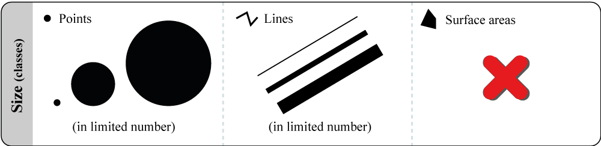
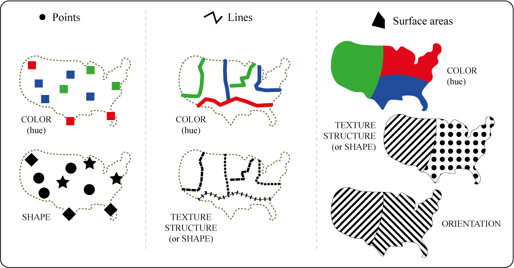

Cartography
Cartography is the discipline that aims at creating maps.
Cartography has scientific, technical and artistic foundations.
Cartography
Scientific foundations
Mathematics are one pillar of cartography: geodesic systems, coordinate reference systems are fundamental tools for creating maps.
The map preparation (data management and transformations) is a process that needs precision and accuracy.
The mapping process relies on a set of rules from the semiology of graphics and a strong methodological tooling.
Cartography
Scientific foundations
The map itself is the subject of numerous researches: communicational efficiency, animated cartography, optimization of flows mapping…
Cartography
Technical foundations
Cartography is based on the acquisition, preparation and processing of data. It requires the use of specialized software products (spreadsheets, GIS, mapping software, spatial databases…).
Cartography
Artistic foundations
The map creation process implies most of the time a search for aestheticism, a design and a certain viewpoint on spatial phenomena.
As for any communication object, the graphic design of a map has an impact on the transmission of the message.
Cartography
Artistic foundations
What are the maps used for?
What are the maps used for?
Analysis (reveal phenomena and spatial organisation)
What are the maps used for?
What are the maps used for?
Visualizing its own territory, navigating
Take a step back
The context of production matters.
To better understand the issues of legibility and transmission of the cartographic message ask yourself:
- What is my role as I produce a map?
- What is the purpose of my map, how should people react to it?
- For which audience is it intended? What do they need to know to understand it?
This directly influences the geographical bounding box and the projection used, the generalization of the map background, the graphic choices (fonts, colors, format), the vocabulary used.
What about the thematic map
A widely appreciated tool for analysis, decision support and communication.
There is a need to identify the graphic means that allow to go from a “simple” spatialized statistical information to an efficient graphical representation.
M A P S !
M for message
What message is to be delivered. The message should be coherent, clear, intelligible, and as simple as possible so it can be easily integrated.
A for artistic
A map needs to be attractive. It should be aesthetic and well designed.
P for people
The map should be designed specifically for a single purpose. The mapmaker needs to know whom he/she is addressing.
S for scientific
The map is a professional tool of the geographer. It is a scientific object complying with strict and precise rules, it needs to be as much reproducible as possible and thus open to scientific discussion/dispute.
The Cartographical Language
The Cartographical Language
1. Use the rules from the semiology of graphics
2. Use the cartographic codes and conventions
Semiology of graphics
Jacques Bertin has designed a set of rules for the graphic transcription of information.
3 types of relationship
Differentiation: express relationships of equivalence or difference, with no hierarchy or classification.
Order: express a hierarchy across the data.
Proportionnality: express raw quantities.
Visual variables
A visual variable refers to the way in which graphic figures are made to vary so as to visually transcribe the variations of statistical data.
- size
- value
- color
- shape
- orientation
- texture
Localization and positioning
Localization refers to the position of a place on Earth’s surface. It is a geographical notion.
Positioning refers to the graphic transcription of geographical objects on a map using points, lines, or polygons. Is is a cartographic concept.
Absolute quantitative data
ONLY one visual variable can be used to show absolute quantitative data: the size.
It is the only visulal variable that can express differences, hierarchy and above all proportionality.
Absolute quantitative data
Absolute quantitative data
Absolute quantitative data
Absolute quantitative data
Absolute quantitative data
Absolute quantitative data
Relative quantitative data
(and qualitative ordinal data)
Relative quantitative data

Relative quantitative data
The choropleth map: A cartographic representation formed of ordered colored area on some sort of grid (i.e. admin division).
Use with relative quantitative data and ordered qualitative data.
Before the choropleth map…
- The statistical information in your table cannot always be mapped right away.
The information may need to be converted, collated or reduced to render it intelligible.
- Relative quantitative data (rate, indices, etc.) always need to be synthesized, subdivided into class of values.
This procedure is often called discretization.
Discretization
- Summarize the statistical series
- Position parameters (mean, median, mode…)
- Dispersion parameters (standard deviation, interquartile interval…)
- Analyse the distribution
- Histogram, box plot, distribution diagram
- …
- Determine class intervals
Discretization
- Classes must be homogeneous and distinct
- Number of classes must be smaller than the number of observations
- Essential characteristics of the distribution should be preserved (extent, dispersion, shape of the distribution)
- Use rounded boundary values, or use relevant values. Boundary values should be easy to read an memorize
Relative quantitative data
Relative quantitative data
Relative quantitative data
Relative quantitative data
Relative quantitative data
Qualitative ordinal data

Qualitative nominative data

Qualitative nominative data
Qualitative nominative data
Qualitative nominative data

Qualitative nominative data
Qualitative nominative data
Qualitative nominative data

To sum up and simplify

Conventions and codes
Codes & conventions to help setting the context of the map.
Mandatory elements:
- Title
- Date
- Legend
- Source (and author)
- Scalebar
- North arrow
General layout of the map
Cartographic composition

Tips